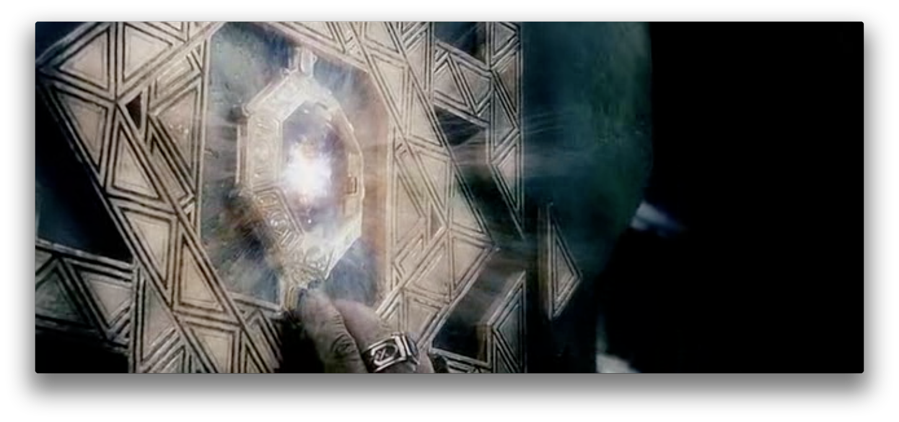

历史
概述¶
交易系统作为一个非常成熟、最早电子化的系统,估计比现在的大家接触的大部分信息系统都要早， 他的模型、理论基础也非常健全； 整个产业非常成熟，基础服务供应商的非常之多； 大部分的人或许多多少少有点交易的经历， 但是对于整个交易系统后台怎么运作，可能不太熟悉。
何为交易系统？在任何一个终端，当你输入某个买、卖指令后，后面是如何运作的？
此书 《The Trade Lifecycle: Behind the Scenes of the Trading Process》
里面介绍的金融产品非常丰富， 超出了我们大多数人接触和理解的范围， 但是对于一个交易的生命周期， 在本书中得到淋漓尽致的描述，而且非常通俗易懂，有兴趣的可以深入了解下。
Arkenstone 项目在企业内部经历长达5年多的迭代周期， 非一日建成，随着企业业务扩展， 不断的开发迭代优化和丰富。
从开始仅仅作为一个 Broker 到最后拥有整个交易平台系统，经历5年之久的打磨，个中辛苦和挫折只有居中人知道。
那么问题来了， 既然市面上那么多成熟交易系统供应商， 为什么还是要重复制造轮子呢？ 处于下面几点：
- 大部分这些系统非常老旧、封闭
- 核心利益的保护，除了通讯协议 FIX 能够达到大统一，各自维护一套系统
- 迭代维护成本昂贵，过程漫长， 不能应变快速的迭代需求
- 成本征得非常非常昂贵–确实非常高，可以对比现在的AWS 去 Oracle, 阿里去IOE
- 更多去中心化交易所诞生， 虚拟货币的冲击，人人都可以开得起交易所
Arkenstone 核心功能在商业化运行超过3年有余(截止2019/10)后，决定将其中部分 核心 部分开源。
一个交易平台的搭建， 不可谓不复杂， 投入巨量的人力物力，可以说是当前应用领域非常复杂的系统之一。
高容错，高并发，高可用; 三高 特征让交易系统的研发变成，软件领域价值非常大的挑战高地，
也导致鲜有人公开交易系统设计的细节。充其量也只能从有限的公开API 中一窥内部构造， 在巨大的投资下也绝无人愿意公开交易系统的核心源码。
天下苦交易系统久已，更坏的是太多人为设计的交易系统，留下诸多暗门，给做市者调节配置，对于大部分弱势群体盘剥甚严。
Arkenstone 本着对自己系统技术过硬、过程够透明、和对行业的信心， 决定开源绝大部分交易系统核心源码， 让交易系统爱好和设计者， 能够仔细研究交易系统内部详情，为设计自个交易系统提供灵感和参照。
这也希望整个交易系统，在社区环境下不断进化、成长，变成一个越来越丰满、越来越健壮、越来越透明系统。
最终能成为一个开源的行业标准....
Arkenstone 取自电影 <<指环王>> 前传 <<霍比特人>> ：
The Arkenstone, also known as "The King's Jewel",
the "Arkenstone of Thrain" and the "Heart of the Mountain",
was a wondrous gem sought by Thorin Oakenshield in J. R. R. Tolkien's The Hobbit.
It was discovered beneath the Lonely Mountain (Erebor) by Thorin's ancestor Thrain and shaped by the Dwarves.
The Arkenstone became the family heirloom of Durin's folk, but was lost when the dragon Smaug stole the mountain from the Dwarves.
Arkenstone 作为 群山之心 & 吾皇至宝 ；
希望她： “永照 正义之途 ，勿让 邪恶之手 侵染公平正义” — 是为开源志
免责声明¶
不拒绝商业引用， 但是必须征得同意授权， 对一切商业行为导致不良后果概不负责 Arkenstone 是有软件著作权